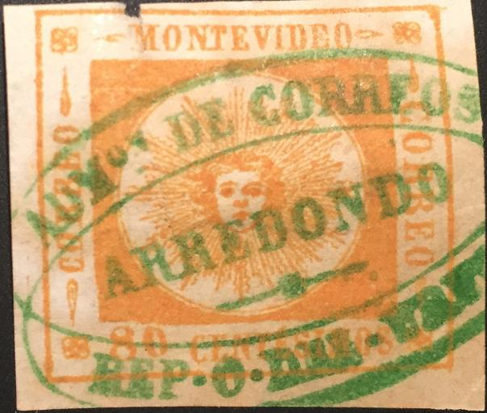
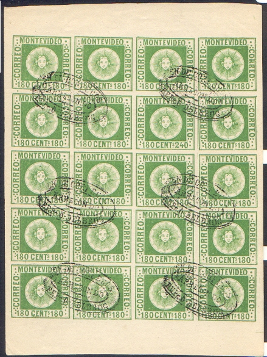
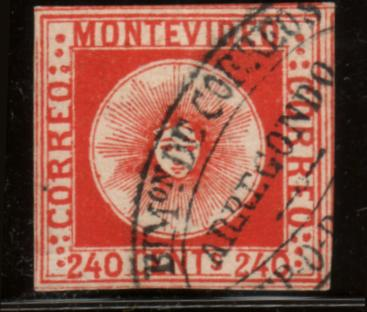
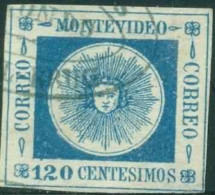
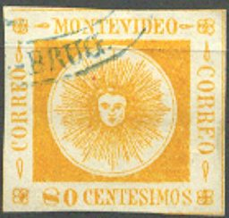
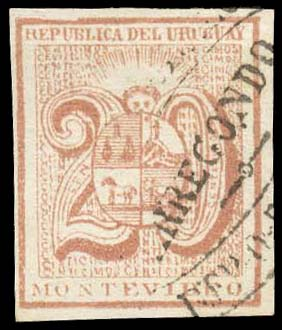
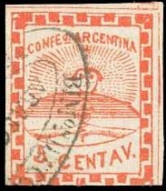
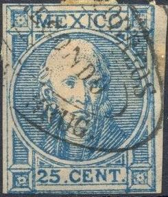
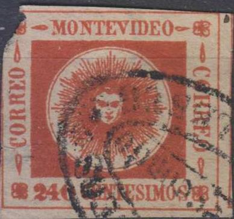
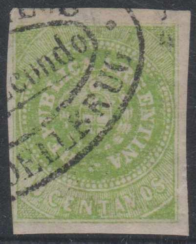

{kind=link}

Genuine Arrendondo (nowadays called Rio Branca) cancel. Arrendondo is nowadays called Rio Branca. Note that forgeries exist with a wrong townname "ARREGONDO" ("G" instead of "D"), also with "BRUG" instead of "URUG".
Return To Catalogue - VF Cancelled forgeries - 'CORREOS 7.1.60. II-III' forged cancels
Note: on my website many of the
pictures can not be seen! They are of course present in the
catalogue;
contact me if you want to purchase the catalogue.
Many forgeries exist with a forged "ARREGONDO" or "Arregondo" cancel. They were probably based on a genuine cancel of ARREDONDO (note the "D" instead of the "G") from Uruguay.

Genuine Arrendondo (nowadays called Rio Branca) cancel.
Arrendondo is nowadays called Rio Branca. Note that forgeries
exist with a wrong townname "ARREGONDO" ("G"
instead of "D"), also with "BRUG" instead of
"URUG".

There are two types of this cancel "BIMon DE CORREOS" and "EN DE CORREOS"
   




 


And on forged stamps of Mexico.


And on stamps of Buenos Aires.
 
On stamps from Uruguay and Argentine.
{kind=link}
{kind=link}
{kind=link}
{kind=link}
{kind=link}
{kind=link}
{kind=link}